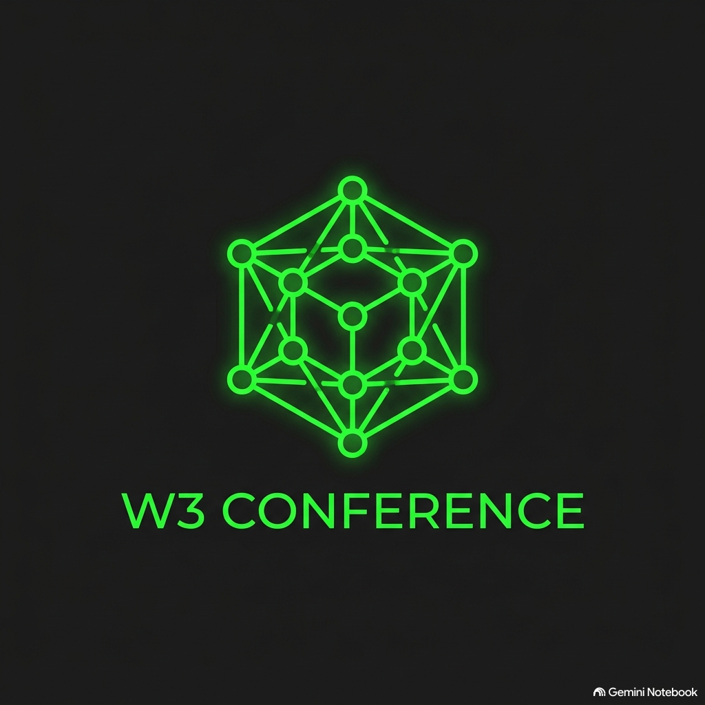
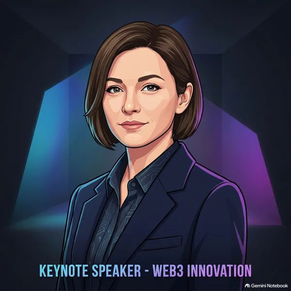
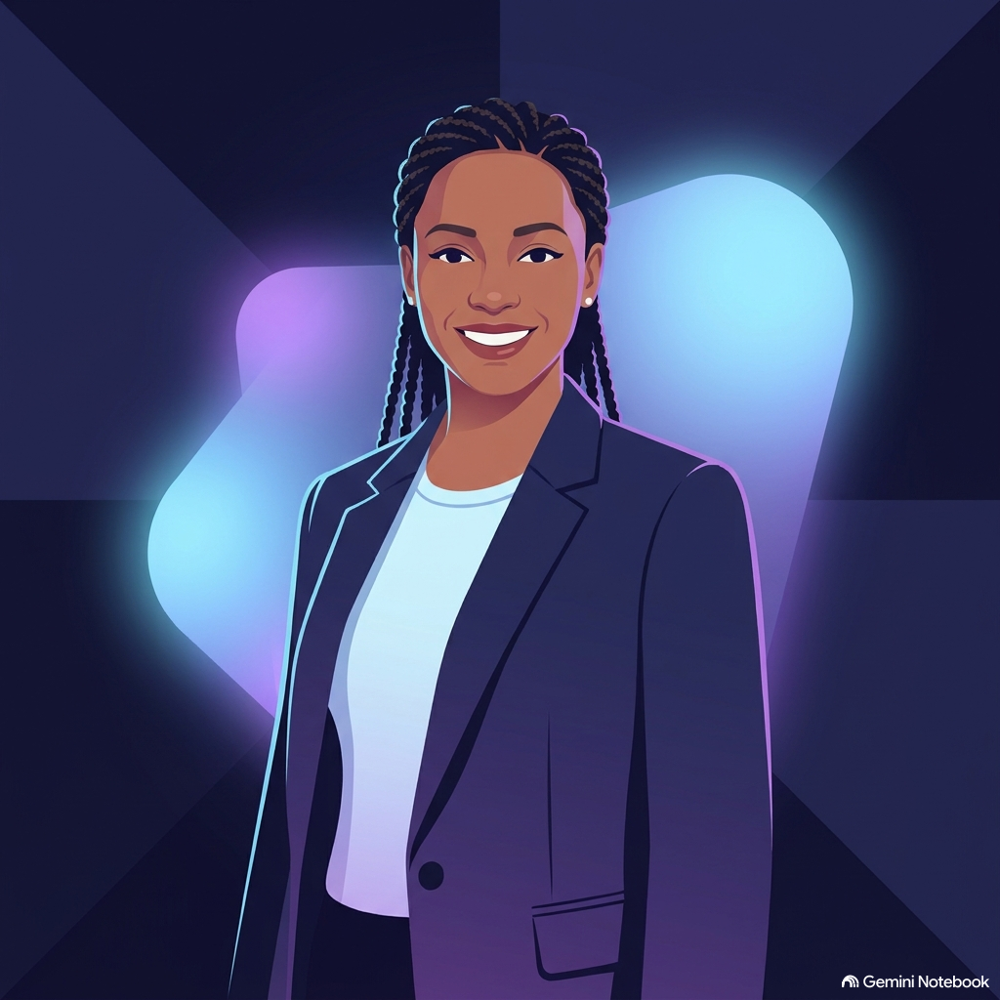

Keynote: The Future of Web3
-
Speaker: Jane Doe
Join us for an inspiring keynote on the future of Web3 technologies.

Welcome to the Future of Web3 Conference! Check out our amazing program.
-
Speaker: Jane Doe
Join us for an inspiring keynote on the future of Web3 technologies.
-
Speakers: John Smith, Alice Johnson, Bob Lee
A panel discussion on the practical applications of Web3 technologies.
-
Instructor: Sarah Brown
Grab lunch and network with fellow attendees.
-
Instructor: Michael Green
Hands-on workshop on building decentralized applications (DApps).
-
Speaker: Jane Doe
Closing remarks and thank you to all attendees.
Meet our amazing speakers who are experts in the field of Web3.

Jane is a leading expert in blockchain technology and has been working in the field for over a decade.
John is a renowned developer and entrepreneur in the Web3 space, known for his innovative projects.
Alice is a thought leader in decentralized finance (DeFi) and has contributed to several high-profile projects.
Bob is a blockchain researcher and educator, passionate about advancing the understanding of Web3 technologies.

Sarah is a community manager and advocate for blockchain adoption, focusing on user experience and engagement.
Michael is a software engineer specializing in smart contract development and decentralized applications.